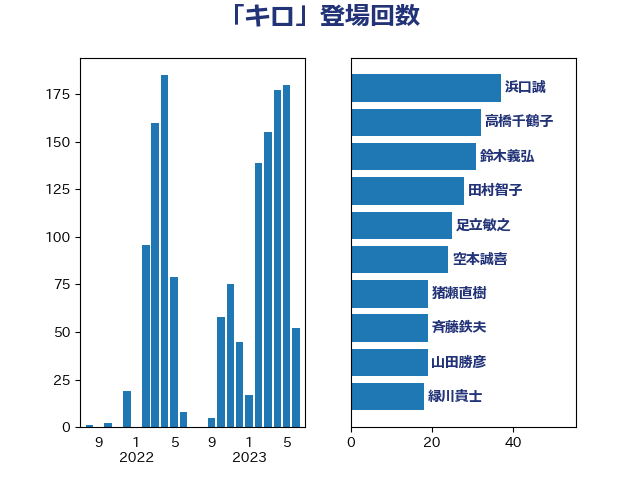

単語「キロ」

| 浜口誠 | 国民民主党 | 37 回 |
| 高橋千鶴子 | 日本共産党 | 32 回 |
| 鈴木義弘 | 国民民主党 | 31 回 |
| 田村智子 | 日本共産党 | 28 回 |
| 足立敏之 | 自由民主党 | 25 回 |
| 空本誠喜 | 日本維新の会 | 24 回 |
| 猪瀬直樹 | 日本維新の会 | 19 回 |
| 斉藤鉄夫 | 公明党 | 19 回 |
| 山田勝彦 | 立憲民主党 | 19 回 |
| 緑川貴士 | 立憲民主党 | 18 回 |
| 山添拓 | 日本共産党 | 18 回 |
| 緒方林太郎 | 無所属 | 17 回 |
| 山岸一生 | 立憲民主党 | 17 回 |
| 渡辺周 | 立憲民主党 | 16 回 |
| 鈴木敦 | 国民民主党 | 15 回 |
| 近藤和也 | 立憲民主党 | 13 回 |
| 山本太郎 | れいわ新選組 | 13 回 |
| 佐藤正久 | 自由民主党 | 13 回 |
| 逢坂誠二 | 立憲民主党 | 12 回 |
| 田村貴昭 | 日本共産党 | 12 回 |
| 長友慎治 | 国民民主党 | 11 回 |
| 西村康稔 | 自由民主党 | 11 回 |
| 福島伸享 | 無所属 | 11 回 |
| 伊波洋一 | 無所属 | 11 回 |
| 高橋英明 | 日本維新の会 | 10 回 |
| 笠井亮 | 日本共産党 | 10 回 |
| 穀田恵二 | 日本共産党 | 10 回 |
| 石井章 | 日本維新の会 | 10 回 |
| 森屋隆 | 立憲民主党 | 10 回 |
| 野間健 | 立憲民主党 | 9 回 |
| 西銘恒三郎 | 自由民主党 | 9 回 |
| 稲富修二 | 立憲民主党 | 9 回 |
| 神津たけし | 立憲民主党 | 9 回 |
| 枝野幸男 | 立憲民主党 | 9 回 |
| 東国幹 | 自由民主党 | 9 回 |
| 山本剛正 | 日本維新の会 | 9 回 |
| 阿部知子 | 立憲民主党 | 8 回 |
| 紙智子 | 日本共産党 | 8 回 |
| 斎藤アレックス | 国民民主党 | 8 回 |
| 岩渕友 | 日本共産党 | 8 回 |
| 阿部弘樹 | 日本維新の会 | 7 回 |
| 舟山康江 | 国民民主党 | 7 回 |
| 浜地雅一 | 公明党 | 7 回 |
| 武部新 | 自由民主党 | 7 回 |
| 榛葉賀津也 | 国民民主党 | 7 回 |
| 梅谷守 | 立憲民主党 | 7 回 |
| 新垣邦男 | 立憲民主党 | 7 回 |
| 岸田文雄 | 自由民主党 | 7 回 |
| 辻元清美 | 立憲民主党 | 6 回 |
| 石川大我 | 立憲民主党 | 6 回 |
| 平林晃 | 公明党 | 6 回 |
| 山崎誠 | 立憲民主党 | 6 回 |
| 小沢雅仁 | 立憲民主党 | 6 回 |
| 宮本徹 | 日本共産党 | 6 回 |
| 井上哲士 | 日本共産党 | 6 回 |
| 階猛 | 立憲民主党 | 5 回 |
| 長浜博行 | 無所属 | 5 回 |
| 金城泰邦 | 公明党 | 5 回 |
| 赤嶺政賢 | 日本共産党 | 5 回 |
| 芳賀道也 | 国民民主党 | 5 回 |
| 河西宏一 | 公明党 | 5 回 |
| 森田俊和 | 立憲民主党 | 5 回 |
| 木村英子 | れいわ新選組 | 5 回 |
| 志位和夫 | 日本共産党 | 5 回 |
| 小西洋之 | 立憲民主党 | 5 回 |
| 下野六太 | 公明党 | 5 回 |
| 須藤元気 | 無所属 | 4 回 |
| 青山繁晴 | 自由民主党 | 4 回 |
| 金子俊平 | 自由民主党 | 4 回 |
| 美延映夫 | 日本維新の会 | 4 回 |
| 福山哲郎 | 立憲民主党 | 4 回 |
| 津島淳 | 自由民主党 | 4 回 |
| 池畑浩太朗 | 日本維新の会 | 4 回 |
| 柴田巧 | 日本維新の会 | 4 回 |
| 柳ヶ瀬裕文 | 日本維新の会 | 4 回 |
| 松木けんこう | 立憲民主党 | 4 回 |
| 末松義規 | 立憲民主党 | 4 回 |
| 徳永エリ | 立憲民主党 | 4 回 |
| 小野泰輔 | 日本維新の会 | 4 回 |
| 小野寺五典 | 自由民主党 | 4 回 |
| 小熊慎司 | 立憲民主党 | 4 回 |
| 嘉田由紀子 | 無所属 | 4 回 |
| 三上えり | 立憲民主党 | 4 回 |
| 鈴木庸介 | 立憲民主党 | 3 回 |
| 重徳和彦 | 立憲民主党 | 3 回 |
| 豊田俊郎 | 自由民主党 | 3 回 |
| 西岡秀子 | 国民民主党 | 3 回 |
| 萩生田光一 | 自由民主党 | 3 回 |
| 若松謙維 | 公明党 | 3 回 |
| 羽田次郎 | 立憲民主党 | 3 回 |
| 篠原孝 | 立憲民主党 | 3 回 |
| 石井苗子 | 日本維新の会 | 3 回 |
| 矢倉克夫 | 公明党 | 3 回 |
| 田村まみ | 国民民主党 | 3 回 |
| 田中健 | 国民民主党 | 3 回 |
| 牧野たかお | 自由民主党 | 3 回 |
| 片山さつき | 自由民主党 | 3 回 |
| 渡辺猛之 | 自由民主党 | 3 回 |
| 松野明美 | 日本維新の会 | 3 回 |
| 市村浩一郎 | 日本維新の会 | 3 回 |
| 岩本剛人 | 自由民主党 | 3 回 |
| 山岡達丸 | 立憲民主党 | 3 回 |
| 塩川鉄也 | 日本共産党 | 3 回 |
| 吉良州司 | 無所属 | 3 回 |
| 古庄玄知 | 自由民主党 | 3 回 |
| 古川元久 | 国民民主党 | 3 回 |
| 倉林明子 | 日本共産党 | 3 回 |
| 中野英幸 | 自由民主党 | 3 回 |
| 三浦靖 | 自由民主党 | 3 回 |
| 高良鉄美 | 無所属 | 2 回 |
| 馬場伸幸 | 日本維新の会 | 2 回 |
| 青島健太 | 日本維新の会 | 2 回 |
| 長坂康正 | 自由民主党 | 2 回 |
| 鎌田さゆり | 立憲民主党 | 2 回 |
| 金子道仁 | 日本維新の会 | 2 回 |
| 野村哲郎 | 自由民主党 | 2 回 |
| 遠藤良太 | 日本維新の会 | 2 回 |
| 進藤金日子 | 自由民主党 | 2 回 |
| 藤木眞也 | 自由民主党 | 2 回 |
| 若林健太 | 自由民主党 | 2 回 |
| 篠原豪 | 立憲民主党 | 2 回 |
| 石原正敬 | 自由民主党 | 2 回 |
| 田嶋要 | 立憲民主党 | 2 回 |
| 浅田均 | 日本維新の会 | 2 回 |
| 浅川義治 | 日本維新の会 | 2 回 |
| 松原仁 | 立憲民主党 | 2 回 |
| 杉本和巳 | 日本維新の会 | 2 回 |
| 末次精一 | 立憲民主党 | 2 回 |
| 朝日健太郎 | 自由民主党 | 2 回 |
| 庄子賢一 | 公明党 | 2 回 |
| 川田龍平 | 立憲民主党 | 2 回 |
| 島尻安伊子 | 自由民主党 | 2 回 |
| 岩屋毅 | 自由民主党 | 2 回 |
| 岡田直樹 | 自由民主党 | 2 回 |
| 岡田克也 | 立憲民主党 | 2 回 |
| 山下貴司 | 自由民主党 | 2 回 |
| 宮崎政久 | 自由民主党 | 2 回 |
| 室井邦彦 | 日本維新の会 | 2 回 |
| 宗清皇一 | 自由民主党 | 2 回 |
| 奥下剛光 | 日本維新の会 | 2 回 |
| 大口善徳 | 公明党 | 2 回 |
| 国光あやの | 自由民主党 | 2 回 |
| 吉田久美子 | 公明党 | 2 回 |
| 古賀之士 | 立憲民主党 | 2 回 |
| 北神圭朗 | 無所属 | 2 回 |
| 住吉寛紀 | 日本維新の会 | 2 回 |
| 仁木博文 | 無所属 | 2 回 |
| 串田誠一 | 日本維新の会 | 2 回 |
| 中村裕之 | 自由民主党 | 2 回 |
| 上田英俊 | 自由民主党 | 2 回 |
| 上田清司 | 国民民主党 | 2 回 |
| 鬼木誠 | 立憲民主党 | 1 回 |
| 高橋光男 | 公明党 | 1 回 |
| 高木かおり | 日本維新の会 | 1 回 |
| 高市早苗 | 自由民主党 | 1 回 |
| 馬場雄基 | 立憲民主党 | 1 回 |
| 音喜多駿 | 日本維新の会 | 1 回 |
| 青木愛 | 立憲民主党 | 1 回 |
| 青山大人 | 立憲民主党 | 1 回 |
| 阿部司 | 日本維新の会 | 1 回 |
| 門山宏哲 | 自由民主党 | 1 回 |
| 長谷川淳二 | 自由民主党 | 1 回 |
| 長谷川岳 | 自由民主党 | 1 回 |
| 長妻昭 | 立憲民主党 | 1 回 |
| 鈴木俊一 | 自由民主党 | 1 回 |
| 金子恵美 | 立憲民主党 | 1 回 |
| 野田国義 | 立憲民主党 | 1 回 |
| 里見隆治 | 公明党 | 1 回 |
| 酒井庸行 | 自由民主党 | 1 回 |
| 近藤昭一 | 立憲民主党 | 1 回 |
| 辻清人 | 自由民主党 | 1 回 |
| 谷公一 | 自由民主党 | 1 回 |
| 西田昭二 | 自由民主党 | 1 回 |
| 菅直人 | 立憲民主党 | 1 回 |
| 船橋利実 | 自由民主党 | 1 回 |
| 竹内真二 | 公明党 | 1 回 |
| 福田昭夫 | 立憲民主党 | 1 回 |
| 福岡資麿 | 自由民主党 | 1 回 |
| 神谷政幸 | 自由民主党 | 1 回 |
| 神田潤一 | 自由民主党 | 1 回 |
| 石破茂 | 自由民主党 | 1 回 |
| 石川博崇 | 公明党 | 1 回 |
| 石井正弘 | 自由民主党 | 1 回 |
| 白石洋一 | 立憲民主党 | 1 回 |
| 田名部匡代 | 立憲民主党 | 1 回 |
| 漆間譲司 | 日本維新の会 | 1 回 |
| 湯原俊二 | 立憲民主党 | 1 回 |
| 渡辺創 | 立憲民主党 | 1 回 |
| 清水貴之 | 日本維新の会 | 1 回 |
| 浜田靖一 | 自由民主党 | 1 回 |
| 池下卓 | 日本維新の会 | 1 回 |
| 永井学 | 自由民主党 | 1 回 |
| 水野素子 | 立憲民主党 | 1 回 |
| 比嘉奈津美 | 自由民主党 | 1 回 |
| 櫛渕万里 | れいわ新選組 | 1 回 |
| 横山信一 | 公明党 | 1 回 |
| 梶原大介 | 自由民主党 | 1 回 |
| 梅村みずほ | 日本維新の会 | 1 回 |
| 松川るい | 自由民主党 | 1 回 |
| 本田太郎 | 自由民主党 | 1 回 |
| 早坂敦 | 日本維新の会 | 1 回 |
| 後藤祐一 | 立憲民主党 | 1 回 |
| 平山佐知子 | 無所属 | 1 回 |
| 岸真紀子 | 立憲民主党 | 1 回 |
| 山田俊男 | 自由民主党 | 1 回 |
| 山本香苗 | 公明党 | 1 回 |
| 山本左近 | 自由民主党 | 1 回 |
| 山本佐知子 | 自由民主党 | 1 回 |
| 山井和則 | 立憲民主党 | 1 回 |
| 小池晃 | 日本共産党 | 1 回 |
| 小林鷹之 | 自由民主党 | 1 回 |
| 小倉將信 | 自由民主党 | 1 回 |
| 寺田静 | 無所属 | 1 回 |
| 太田房江 | 自由民主党 | 1 回 |
| 太栄志 | 立憲民主党 | 1 回 |
| 大野泰正 | 自由民主党 | 1 回 |
| 大島敦 | 立憲民主党 | 1 回 |
| 塩田博昭 | 公明党 | 1 回 |
| 堀場幸子 | 日本維新の会 | 1 回 |
| 堀内詔子 | 自由民主党 | 1 回 |
| 國場幸之助 | 自由民主党 | 1 回 |
| 和田有一朗 | 日本維新の会 | 1 回 |
| 吉田とも代 | 日本維新の会 | 1 回 |
| 原口一博 | 立憲民主党 | 1 回 |
| 加藤竜祥 | 自由民主党 | 1 回 |
| 加藤明良 | 自由民主党 | 1 回 |
| 前川清成 | 日本維新の会 | 1 回 |
| 今枝宗一郎 | 自由民主党 | 1 回 |
| 仁比聡平 | 日本共産党 | 1 回 |
| 井野俊郎 | 自由民主党 | 1 回 |
| 井坂信彦 | 立憲民主党 | 1 回 |
| 井上信治 | 自由民主党 | 1 回 |
| 中谷真一 | 自由民主党 | 1 回 |
| 中川郁子 | 自由民主党 | 1 回 |
| 中川康洋 | 公明党 | 1 回 |
| 中川宏昌 | 公明党 | 1 回 |
| 上杉謙太郎 | 自由民主党 | 1 回 |
| 三浦信祐 | 公明党 | 1 回 |
| 三反園訓 | 無所属 | 1 回 |
| 一谷勇一郎 | 日本維新の会 | 1 回 |
| ながえ孝子 | 無所属 | 1 回 |
| おおつき紅葉 | 立憲民主党 | 1 回 |